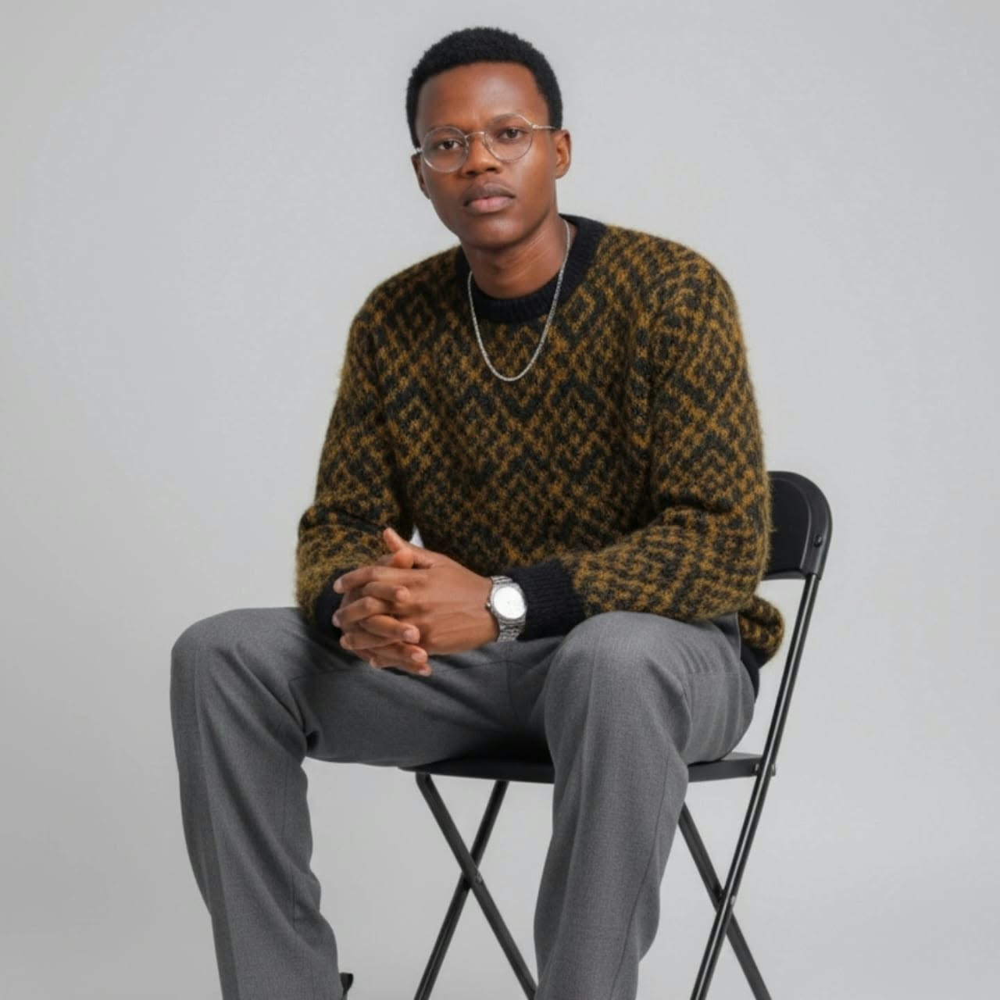

Computer Science student Software developer
Building digital experiences through code.
Hello, I’m Ishmael Munyalo. I enjoy learning how technology can solve practical problems and creating clear, user-friendly experiences along the way.
Exploring opportunities to learn and contribute
Curious by nature. Focused on useful, thoughtful software.
My CV
A little about me
Learning by making, improving one idea at a time.
I’m studying Computer Science and exploring software and web development. I value clear thinking, accessible design, and steady progress, from the first sketch to the final details.
More about Me.Selected work
A few things I’ve been building.
The journey so far
Building a foundation, one step at a time.
-
Currently
Computer Science studies
Third-year student at the University of Embu, exploring software and web development.
-
Looking ahead
Expected graduation: August 2028
Continuing to grow through coursework, practical projects, and collaboration.
What matters to me
Useful, thoughtful software.
I enjoy turning practical problems into clear digital experiences, and refining the details that make them easier to use.